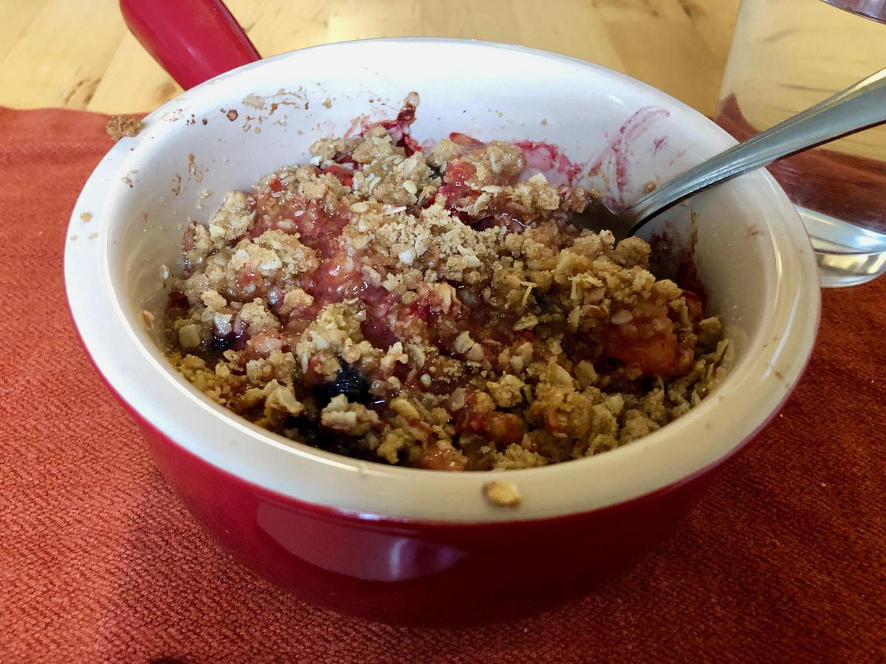

Based on https://www.mccormick.com/recipes/dessert/peach-blueberry-crisp?amp=1
Personal rating: 2 / 5

4 cups peaches, peeled and sliced
1 cup blueberries
1 Tbsp lemon juice
1/2 tsp Pure Vanilla Extract
3 Tbsp cornstarch
2 tsp Cinnamon, Ground
1/2 cup flour
1/2 cup quick-cooking oats
1/2 cup firmly packed light brown sugar
1 tsp Cinnamon, Ground
6 Tbsp cold butter, cut into chunks